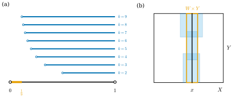
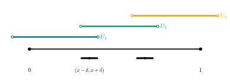

3.6 컴팩트성
이 절의 목표
- 열린덮개로 컴팩트성을 정의하고, 컴팩트한 집합과 그렇지 않은 집합을 덮개로 구별할 수 있다.
- 하이네-보렐 정리(\(\R^n\)에서 컴팩트 \(\iff\) 닫혀 있고 유계)를 증명하고 \(S^n\), \(T^2\), \(\RP^n\)의 컴팩트성을 보일 수 있다.
- 컴팩트 공간 위의 연속함수가 최댓값과 최솟값을 가짐을 증명하고, “컴팩트 공간에서 하우스도르프 공간으로 가는 연속 전단사는 위상동형사상”을 써서 정사각형의 몫공간 \(\cong T^2\)을 증명할 수 있다.
- 르베그 수 보조정리와 균등연속성, 컴팩트 거리공간의 수렴하는 부분수열을 안다.
선수 지식
- 명제 3.3.4 (부분공간 위상), 예 3.3.13 (\(\R^m \times \R^n = \R^{m+n}\)), 명제 3.3.16
- 명제 3.4.8 (몫사상 판정), 예 3.4.10 (정사각형의 몫공간), 명제 3.4.14
- 정의 3.5.1 (하우스도르프), 정의 3.5.8 (제2가산)
- 실수의 완비성(상한 공리): 위로 유계인 공집합 아닌 실수 집합은 최소 상계 \(\sup\)을 가진다.
동기
3.5절까지 \(\RP^n\)과 토러스 \(T^2\)가 좋은 공간(하우스도르프, 제2가산)임을 보였다. 이 두 공간에는 \(\R^n\)에 없는 성질이 하나 더 있다. “유한하게 끝난다”는 성질이다. 미적분학에서 닫힌구간 \([a, b]\) 위의 연속함수는 최댓값을 가졌지만, 열린구간 \((0, 1)\) 위의 \(1/x\)는 그렇지 않았다. 차이는 무엇인가? 거리를 쓰지 않고 말할 수 있는가?
답은 “덮개”다. \((0, 1)\)을 열린구간 \((1/k, 1)\)들로 덮으면 유한개로는 결코 다 덮을 수 없다. \(0\) 근처에 언제나 틈이 남는다(그림 3.6.1(a)). 반면 \([0, 1]\)은 어떤 열린집합들로 덮든 유한개만 골라도 다 덮인다. 이 성질을 컴팩트성이라 한다. 이 절에서 컴팩트성이 \(\R^n\)에서는 “닫혀 있고 유계”와 같음을 보이고, 예 3.4.10에서 남겨 둔 질문, 즉 정사각형의 몫공간에서 토러스 \(T^2\)로 가는 연속 전단사가 위상동형사상인가에 답한다.

열린덮개와 컴팩트성
정의 3.6.1 (열린덮개와 컴팩트성, open cover and compactness). \(X\)가 위상공간이라 하자. 열린집합들의 모임 \(\mathcal{U}\)의 합집합이 \(X\)이면 \(\mathcal{U}\)를 \(X\)의 열린덮개(open cover)라 한다. \(\mathcal{U}\)의 부분모임으로서 여전히 \(X\)를 덮는 것을 부분덮개(subcover)라 한다. \(X\)의 모든 열린덮개가 유한개의 원소로 이루어진 부분덮개를 가지면 \(X\)를 컴팩트(compact)라 한다. 부분집합 \(K \subseteq X\)가 부분공간으로서 컴팩트하면 \(K\)를 \(X\)의 컴팩트 부분집합이라 한다.
부분집합의 컴팩트성은 \(X\)의 열린집합으로 판정해도 된다. \(K\)의 열린집합은 \(U \cap K\) 꼴이므로, “\(K\)의 열린덮개마다 유한 부분덮개가 있다”는 말은 “\(K \subseteq \bigcup_\alpha U_\alpha\)인 \(X\)의 열린집합 \(U_\alpha\)들이 있으면 그 가운데 유한개로 이미 \(K \subseteq U_{\alpha_1} \cup \dots \cup U_{\alpha_m}\)이다”와 같다.
예 3.6.2. (a) 유한집합은 컴팩트하다. 각 점을 포함하는 덮개의 원소를 하나씩 고르면 유한 부분덮개다.
(b) 위상공간에서 \(x_k \to x\)이면 \(K = \{x\} \cup \{x_k : k \ge 1\}\)은 컴팩트하다. \(K\)를 덮는 열린집합들 가운데 \(x\)를 포함하는 \(U_0\)을 고르면, 수렴의 정의에서 \(k \ge k_0\)인 모든 \(x_k\)가 \(U_0\)에 있다. 나머지 \(x_1, \dots, x_{k_0 - 1}\)은 유한개이므로 각각 하나씩 원소를 더 고르면 된다.
비예 3.6.3. (a) \(\R\)은 컴팩트하지 않다. \(\{(-k, k) : k \ge 1\}\)은 열린덮개인데, 유한개를 고르면 합집합이 가장 큰 \(k\)에 대한 \((-k, k)\)이므로 \(k\) 자신을 덮지 못한다.
(b) \((0, 1)\)은 컴팩트하지 않다. \(\{(1/k, 1) : k \ge 2\}\)는 열린덮개이다(\(x \in (0, 1)\)이면 \(1/k \lt x\)인 \(k\)가 있다). 유한개 \(k_1 \lt \dots \lt k_m\)을 고르면 합집합은 \((1/k_m, 1)\)이고 \(1/(2k_m)\)을 덮지 못한다(그림 3.6.1(a)).
(c) 같은 방식으로 \(\R^n\)의 열린공 \(B_1(0)\)은 \(\{B_{1 - 1/k}(0)\}_{k \ge 2}\)로 덮으면 유한 부분덮개가 없으므로 컴팩트하지 않다.
(d) 무한집합에 이산위상을 주면 컴팩트하지 않다. 한 점 집합들의 모임은 열린덮개인데, 어떤 원소를 빼도 그 점을 덮지 못한다.
이제 가장 기본적인 컴팩트 집합을 확인하자. 이 증명에만 실수의 완비성(상한 공리)이 쓰인다. 나머지 모든 컴팩트성은 이것으로부터 위상적 논증으로 얻는다.
정리 3.6.4. 닫힌구간 \([a, b] \subseteq \R\)은 컴팩트하다.
이 정리가 말하는 것. 닫힌구간은 어떤 열린집합들로 덮든 그 가운데 유한개만으로 다 덮인다. 이 절의 다른 컴팩트 집합은 모두 이 정리에서 위상적 논증으로 얻는다.
증명 아이디어: 왼쪽 끝에서 출발해 “유한개로 덮을 수 있는 데까지” 가 본다. 그 한계점 \(c\)를 덮는 열린집합 하나가 \(c\)의 양옆을 조금씩 덮으므로 \(c\)를 넘어설 수 있다. 따라서 한계는 \(b\)다.
증명. \(\mathcal{U}\)가 \([a, b]\)를 덮는 \(\R\)의 열린집합들의 모임이라 하자. \(G = \{x \in [a, b] : [a, x]\text{가 } \mathcal{U}\text{의 유한개로 덮인다}\}\)로 두자. \(a\)를 포함하는 원소 하나가 \([a, a]\)를 덮으므로 \(a \in G\)이고, \(G\)는 \(b\)로 위로 유계다. \(c = \sup G \in [a, b]\)라 하자.
\(c\)를 포함하는 \(U_0 \in \mathcal{U}\)를 고르고 \((c - \delta, c + \delta) \subseteq U_0\)인 \(\delta \gt 0\)을 잡는다. \(c\)가 상한이므로 \(c - \delta \lt x \le c\)인 \(x \in G\)가 있다. \([a, x]\)를 덮는 유한개에 \(U_0\)을 더하면 \([a, x] \cup (c - \delta, c + \delta) \supseteq [a,\ \min(c + \delta/2, b)]\)가 유한개로 덮인다. 따라서 \(\min(c + \delta/2, b) \in G\)이다. \(c \lt b\)라면 \(\min(c + \delta/2, b) \gt c\)가 \(G\)에 속해 \(c = \sup G\)에 모순이다. 따라서 \(c = b\)이고, 방금 본 것에서 \(b = \min(c + \delta/2, b) \in G\)이다. 즉 \([a, b]\)가 유한개로 덮인다.
명제 3.6.5 (컴팩트성의 기본 성질).
- (a) 컴팩트 공간의 닫힌부분집합은 컴팩트하다.
- (b) 하우스도르프 공간의 컴팩트 부분집합은 닫혀 있다.
- (c) 컴팩트 공간의 연속상은 컴팩트하다. 즉 \(X\)가 컴팩트하고 \(f\colon X \to Y\)가 연속이면 \(f(X)\)는 컴팩트하다.
- (d) 컴팩트 부분집합 유한개의 합집합은 컴팩트하다.
증명. (a) \(C \subseteq X\)가 닫혀 있고 \(C \subseteq \bigcup_\alpha U_\alpha\) (\(U_\alpha\)는 \(X\)에서 열림)라 하자. 여기에 열린집합 \(X \setminus C\)를 더하면 \(X\)의 열린덮개가 된다. 유한 부분덮개를 고르고 \(X \setminus C\)를 빼면(들어 있었다면) 남은 유한개의 \(U_\alpha\)가 \(C\)를 덮는다.
(b) \(K\)가 컴팩트이고 \(p \notin K\)라 하자. 각 \(a \in K\)에서 서로소인 근방 \(U_a \ni a\), \(V_a \ni p\)를 고른다. \(\{U_a\}_{a \in K}\)는 \(K\)를 덮으므로 유한개 \(U_{a_1}, \dots, U_{a_m}\)이 \(K\)를 덮는다. \(V = V_{a_1} \cap \dots \cap V_{a_m}\)은 \(p\)의 근방이고, 각 \(U_{a_i}\)와 서로소이므로 \(K\)와 서로소이다. 따라서 \(X \setminus K\)의 모든 점이 \(X \setminus K\) 안의 근방을 가지고, \(K\)는 닫혀 있다.
(c) \(f(X) \subseteq \bigcup_\alpha V_\alpha\) (\(V_\alpha\)는 \(Y\)에서 열림)이면 \(\{f^{-1}(V_\alpha)\}\)는 \(X\)의 열린덮개다. 유한개 \(f^{-1}(V_{\alpha_1}), \dots, f^{-1}(V_{\alpha_m})\)이 \(X\)를 덮으면 \(V_{\alpha_1}, \dots, V_{\alpha_m}\)이 \(f(X)\)를 덮는다.
(d) \(K_1, \dots, K_m\)이 컴팩트이면 \(K_1 \cup \dots \cup K_m\)을 덮는 모임은 각 \(K_i\)를 덮고, 각각에서 고른 유한 부분덮개들을 모두 합치면 유한하다.
곱의 컴팩트성은 다음 정리가 준다. 증명의 핵심은 그림 3.6.1(b)의 “튜브”다.
정리 3.6.6 (컴팩트 공간의 곱). \(X\)와 \(Y\)가 컴팩트하면 \(X \times Y\)도 컴팩트하다. 따라서 유한개의 컴팩트 공간의 곱은 컴팩트하다.
이 정리가 말하는 것. 컴팩트 공간 두 개의 곱은 다시 컴팩트하다. 그래서 닫힌구간의 곱인 상자 \([a_1, b_1] \times \dots \times [a_n, b_n]\)도 컴팩트하다.
증명 아이디어: 한 세로 조각 \(\{x\} \times Y\)는 \(Y\)와 위상동형이므로 유한개의 상자로 덮인다. 그 상자들의 \(X\) 쪽 성분의 교집합 \(W\)는 \(x\)의 근방이고, 상자들은 튜브 \(W \times Y\) 전체를 덮는다. 그런 \(W\)들로 \(X\)를 덮고 다시 유한개를 고른다.
증명. \(\mathcal{U}\)가 \(X \times Y\)의 열린덮개라 하자. 각 점 \((x, y)\)는 어떤 \(U \in \mathcal{U}\)에 들어 있고, 곱위상의 정의에서 \((x, y) \in A \times B \subseteq U\)인 상자가 있다. 이런 상자로 덮을 수 있으면 원래 \(\mathcal{U}\)의 원소로도 덮을 수 있으므로, 처음부터 \(\mathcal{U}\)의 각 원소 안에 들어가는 상자들만 생각해도 된다.
1단계(튜브). \(x \in X\)를 고정하자. \(\{x\} \times Y\)의 각 점 \((x, y)\)마다 어떤 원소 \(U_y \in \mathcal{U}\) 안에 들어가는 상자 \(A_y \times B_y \ni (x, y)\)를 고른다. \(\{B_y\}_{y \in Y}\)는 \(Y\)의 열린덮개이므로 유한개 \(B_{y_1}, \dots, B_{y_m}\)이 \(Y\)를 덮는다. \(W_x = A_{y_1} \cap \dots \cap A_{y_m}\)은 \(x\)의 근방이고, \(W_x \times Y \subseteq \bigcup_i (A_{y_i} \times B_{y_i}) \subseteq U_{y_1} \cup \dots \cup U_{y_m}\)이다. (\((x', y') \in W_x \times Y\)이면 \(y' \in B_{y_i}\)인 \(i\)가 있고 \(x' \in W_x \subseteq A_{y_i}\)이다.)
2단계. \(\{W_x\}_{x \in X}\)는 \(X\)의 열린덮개이므로 유한개 \(W_{x_1}, \dots, W_{x_l}\)이 \(X\)를 덮는다. 그러면 \(X \times Y = \bigcup_j (W_{x_j} \times Y)\)이고, 각 튜브는 \(\mathcal{U}\)의 원소 유한개로 덮이므로 \(X \times Y\)는 \(\mathcal{U}\)의 원소 유한개로 덮인다. 여러 개의 곱은 \(X_1 \times \dots \times X_k = (X_1 \times \dots \times X_{k-1}) \times X_k\)로 보고 귀납법을 쓴다.
하이네-보렐 정리
거리공간의 부분집합 \(A\)가 어떤 공 \(B_R(p)\)에 포함되면 \(A\)를 유계(bounded)라 한다. \(\R^n\)에서는 \(A \subseteq B_R(0)\)인 \(R\)이 있다는 것과 같다.
정리 3.6.7 (하이네-보렐 정리, Heine–Borel theorem). \(K \subseteq \R^n\)이 컴팩트일 필요충분조건은 \(K\)가 닫혀 있고 유계인 것이다.
이 정리가 말하는 것. \(\R^n\)에서는 “모든 열린덮개가 유한 부분덮개를 가진다”는 추상적인 조건을 “닫혀 있고 유계”라는 눈으로 확인할 수 있는 조건으로 바꿀 수 있다.
증명 아이디어: (\(\Rightarrow\))의 닫힘은 하우스도르프 조건에서, 유계는 커지는 공들의 덮개에서 나온다. (\(\Leftarrow\))는 \(K\)를 큰 정육면체 \(C_R\) 안에 넣고, 컴팩트한 \(C_R\)의 닫힌부분집합으로 본다.
증명. (\(\Rightarrow\)) \(\R^n\)은 하우스도르프이므로(예 3.5.2) 명제 3.6.5(b)에 의해 \(K\)는 닫혀 있다. 또 \(\{B_k(0)\}_{k \ge 1}\)은 \(K\)를 덮으므로 유한개로 덮이고, 그 가운데 가장 큰 공에 \(K\)가 들어간다.
(\(\Leftarrow\)) \(K \subseteq B_R(0)\)이라 하자. \(\abs{x^i} \le \abs{x}\)이므로
이다. 예 3.3.13과 명제 3.3.16에 의해 \(C_R\)의 부분공간 위상은 부분공간 \([-R, R]\)들의 곱위상과 같고, 정리 3.6.4와 정리 3.6.6에 의해 \(C_R\)은 컴팩트하다. \(K\)는 \(\R^n\)에서 닫혀 있으므로 \(K = K \cap C_R\)은 \(C_R\)에서도 닫혀 있고(명제 3.3.4(a)), 명제 3.6.5(a)에 의해 컴팩트하다. (\(K\)가 \(C_R\)의 부분공간으로서 컴팩트한 것과 \(\R^n\)의 부분공간으로서 컴팩트한 것은 같다. 두 경우 모두 \(K\) 위의 위상이 \(\R^n\)에서 물려받은 위상이기 때문이다.)
예 3.6.8 (컴팩트 집합). 다음은 모두 닫혀 있고 유계이므로 컴팩트하다.
- (a) 닫힌공 \(\overline{B}_r(p) \subseteq \R^n\)과 구면 \(S^n \subseteq \R^{n+1}\)(예 3.2.8(a)에서 닫혀 있고, \(S^n \subseteq B_2(0)\)).
- (b) 토러스 \(T^2 = S^1 \times S^1 \subseteq \R^4\). 정리 3.6.6으로도 보인다.
- (c) 원환면 \(T_{R,r} \subseteq \R^3\). \(T_{R,r}\)는 연속함수 \(\big(\sqrt{x^2 + y^2} - R\big)^2 + z^2\)에 의한 \(\{r^2\}\)의 역상이므로 닫혀 있고, \(T_{R,r} \subseteq B_{R + r + 1}(0)\)이다. (또는 \(T_{R,r}\)는 컴팩트 공간 \(T^2\)의 연속상이다, 예 3.3.17.)
- (d) 8자 곡선 \(E\)(비예 3.3.11). \(E \subseteq [-1, 1]^2\)이고 \(E\)는 닫혀 있다(연습 3.3.6). 연습에 기대지 않는 한 줄 근거도 있다. \(\beta(t) = (\sin 2t, \sin t)\)는 \([-\pi, \pi]\)에서 연속이고 \(\beta(\pm\pi) = (0, 0) = \beta(0)\)이므로 \(E = \beta([-\pi, \pi])\)는 컴팩트인 닫힌구간의 연속상이어서 컴팩트하다(정리 3.6.4, 명제 3.6.5(c)).
비예 3.6.9 (하이네-보렐 정리는 \(\R^n\)의 정리다). (a) \(\R\)에 이산거리를 주면 \(\R\)은 닫혀 있고(전체 공간) 유계이지만(\(\R = B_2(0)\)) 컴팩트하지 않다(비예 3.6.3(d)). “닫혀 있고 유계이면 컴팩트”는 일반적인 거리공간에서 거짓이다. 증명에서 \(\R^n\)의 성질(정육면체 \(C_R\)의 컴팩트성)을 썼다.
(b) \(\Q \cap [0, 1]\)은 유계이지만 \(\R\)에서 닫혀 있지 않으므로(폐포가 \([0,1]\)) 컴팩트하지 않다.
최댓값 정리와 닫힌사상 보조정리
정리 3.6.10 (최댓값·최솟값 정리). \(X\)가 공집합이 아닌 컴팩트 공간이고 \(f\colon X \to \R\)가 연속이면 \(f\)는 최댓값과 최솟값을 가진다. 즉 모든 \(x\)에서 \(f(p) \le f(x) \le f(q)\)인 \(p, q \in X\)가 있다.
이 정리가 말하는 것. 미적분학의 최댓값 정리는 정의역의 컴팩트성만으로 성립한다. 정의역이 컴팩트하면 어떤 연속 실함수든 최댓값과 최솟값에 실제로 도달한다.
증명 아이디어: 상 \(f(X)\)는 \(\R\)의 컴팩트 집합이므로 닫혀 있고 유계다. 유계이므로 상한이 있고, 닫혀 있으므로 그 상한이 \(f(X)\)에 속한다.
증명. 명제 3.6.5(c)에 의해 \(f(X)\)는 \(\R\)의 컴팩트 부분집합이므로 하이네-보렐 정리에 의해 닫혀 있고 유계다. \(M = \sup f(X)\)는 유계이므로 유한하고, 모든 \(\varepsilon \gt 0\)에 대해 \((M - \varepsilon, M]\)에 \(f(X)\)의 점이 있으므로 \(M \in \overline{f(X)} = f(X)\)이다(명제 3.1.17). 즉 \(M = f(q)\)인 \(q\)가 있다. 최솟값도 같다(\(-f\)에 적용).
예 3.6.11. (a) \(f\colon S^1 \to \R\), \(f(x) = x^1 + 2x^2\)는 연속이고 \(S^1\)이 컴팩트하므로 최댓값을 가진다. 실제로 \(x = (\cos\theta, \sin\theta)\)로 쓰고 \(\cos\theta_0 = 1/\sqrt5\), \(\sin\theta_0 = 2/\sqrt5\)로 두면
이므로 최댓값은 \(\sqrt5\)이고 \(x = (1, 2)/\sqrt5\)에서, 최솟값은 \(-\sqrt5\)이고 \(x = -(1, 2)/\sqrt5\)에서 얻는다. 같은 \(f\)를 컴팩트가 아닌 \(\R^2\) 전체에서 보면 최댓값이 없다.
(b) \(K \subseteq \R^n\)이 공집합이 아닌 컴팩트 집합이면 원점에서 가장 먼 점이 있다. \(x \mapsto \abs{x}^2\)이 \(K\) 위에서 최댓값을 갖기 때문이다. 8장에서 이 사실로 “컴팩트 곡면에는 가우스 곡률이 양수인 점이 있다”를 증명한다.
검증: verify/v-3-6-compactness.py
다음 정리는 이 절에서 가장 자주 쓰는 도구다. 비예 3.2.15에서 연속 전단사의 역사상이 연속이 아닐 수 있음을 보았다. 정의역이 컴팩트하고 공역이 하우스도르프이면 그런 일은 일어나지 않는다.
정리 3.6.12 (닫힌사상 보조정리, closed map lemma). \(X\)가 컴팩트하고 \(Y\)가 하우스도르프이며 \(f\colon X \to Y\)가 연속이라 하자.
- (a) \(f\)는 닫힌사상이다.
- (b) \(f\)가 전사이면 \(f\)는 몫사상이다.
- (c) \(f\)가 전단사이면 \(f\)는 위상동형사상이다.
이 정리가 말하는 것. 컴팩트 공간에서 하우스도르프 공간으로 가는 연속 전단사는 역사상의 연속성을 따로 확인하지 않아도 위상동형사상이다.
증명 아이디어: “닫힌집합 → 컴팩트 → 상이 컴팩트 → 하우스도르프 공간에서 닫힘”의 사슬로 (a)를 보이면, (b)와 (c)는 앞에서 증명한 판정법에서 바로 나온다.
증명. (a) \(C \subseteq X\)가 닫혀 있으면 명제 3.6.5(a)에 의해 컴팩트하고, 명제 3.6.5(c)에 의해 \(f(C)\)가 컴팩트하며, 명제 3.6.5(b)에 의해 \(f(C)\)는 \(Y\)에서 닫혀 있다. (b) (a)에 의해 \(f\)는 연속 전사 닫힌사상이므로 명제 3.4.8(a)에 의해 몫사상이다. (c) (a)에 의해 \(f\)는 연속 전단사 닫힌사상이므로 명제 3.2.13에 의해 위상동형사상이다.
예 3.6.13 (토러스: 정사각형의 몫공간 \(\cong T^2\)). 예 3.4.10의 연속 전단사 \(\tilde g\colon [0, 1]^2/{\sim} \to T^2\)를 생각하자. \([0, 1]^2\)은 컴팩트하고(정리 3.6.4, 3.6.6), 몫공간 \([0, 1]^2/{\sim}\)은 그 연속상(사영 \(\pi\)의 상)이므로 컴팩트하다(명제 3.6.5(c)). \(T^2 \subseteq \R^4\)는 하우스도르프다(명제 3.5.5). 정리 3.6.12(c)에 의해 \(\tilde g\)는 위상동형사상이다. 예 3.3.17의 \(\Phi\)와 합성하면
\[ [0, 1]^2/{\sim} \;\cong\; T^2 = S^1 \times S^1 \;\cong\; T_{R,r} \subseteq \R^3 \]
이다. 정사각형의 변을 붙여 만든 몫공간, 원 두 개의 곱인 토러스, \(\R^3\)의 원환면은 위상적으로 모두 같은 공간이다. 같은 논증으로 \([0, 1]/\{0 \sim 1\} \cong S^1\)이다. \(f(t) = (\cos 2\pi t, \sin 2\pi t)\)는 \([0, 1]\)에서 연속이고 \(f(s) = f(t)\)일 필요충분조건이 \(s = t\) 또는 \(\{s, t\} = \{0, 1\}\)이므로 연속 전단사 \([0, 1]/\{0 \sim 1\} \to S^1\)을 유도하고(정리 3.4.7(b), 연습 3.4.4), 정의역은 \([0, 1]\)의 연속상이라 컴팩트하다. 또 \(Q(x) = \big((x^1)^2 - (x^2)^2,\ 2x^1x^2\big)/\abs{x}^2\)는 \(\R^2 \setminus \{0\}\)에서 연속이고 \(Q(\lambda x) = Q(x)\), \(Q(\rho\cos\theta, \rho\sin\theta) = (\cos 2\theta, \sin 2\theta)\)이므로 연속 전단사 \(\RP^1 \to S^1\)을 유도한다(연습 3.4.6). \(\RP^1\)은 컴팩트 공간 \(S^1\)의 연속상이므로 컴팩트하여 \(\RP^1 \cong S^1\)이다. 또 정리 3.6.12(b)에 의해 \(g\colon [0, 1]^2 \to T^2\) 자신이 몫사상이다.
명제 3.6.14. \(\RP^n\)은 컴팩트하다.
가산 부분덮개, 수열, 르베그 수
컴팩트성은 “유한 부분덮개”를 준다. 제2가산 조건은 그보다 약한 “가산 부분덮개”를 준다. 이것이 12장의 단위분할 구성에서 쓰인다.
명제 3.6.15 (린델뢰프 성질). 제2가산 공간의 모든 열린덮개는 가산 부분덮개를 가진다.
증명. \(\mathcal{B}\)가 가산 기저이고 \(\mathcal{U}\)가 열린덮개라 하자. \(\mathcal{B}' = \{B \in \mathcal{B} : B \subseteq U \text{인 } U \in \mathcal{U}\text{가 있다}\}\)로 두고, 각 \(B \in \mathcal{B}'\)마다 그런 \(U_B \in \mathcal{U}\)를 하나 고른다. \(\{U_B : B \in \mathcal{B}'\}\)는 가산이다. 덮개임을 보이자. \(x \in X\)이면 \(x \in U\)인 \(U \in \mathcal{U}\)가 있고, \(x \in B \subseteq U\)인 \(B \in \mathcal{B}\)가 있다(명제 3.1.21). 이 \(B\)는 \(\mathcal{B}'\)에 속하므로 \(x \in B \subseteq U_B\)이다.
거리공간에서는 컴팩트성을 수열로도 볼 수 있다. 수열 \((x_k)\)에서 첨자 \(k_1 \lt k_2 \lt \cdots\)을 골라 만든 수열 \((x_{k_j})_{j \ge 1}\)을 부분수열(subsequence)이라 한다.
명제 3.6.16. 컴팩트 거리공간의 모든 수열은 수렴하는 부분수열을 가진다. 특히 \(\R^n\)의 유계인 수열은 수렴하는 부분수열을 가진다(볼차노-바이어슈트라스 정리).
증명 아이디어: 수렴하는 부분수열이 없다면 모든 점이 “수열이 유한 번만 들르는” 공을 가진다. 그런 공 유한개로 전체를 덮으면 수열 전체가 유한 번만 들르게 되어 모순이다.
증명. \((X, d)\)가 컴팩트이고 \((x_k)\)가 수열이라 하자. 먼저, 어떤 점 \(x\)에서 모든 공 \(B_{1/j}(x)\)가 무한히 많은 첨자 \(k\)의 \(x_k\)를 포함한다고 하자. 그러면 \(k_1 \lt k_2 \lt \cdots\)을 차례로 골라 \(x_{k_j} \in B_{1/j}(x)\)이게 할 수 있고(매번 앞의 첨자보다 큰 첨자가 무한히 많다), \(d(x_{k_j}, x) \lt 1/j\)이므로 \(x_{k_j} \to x\)이다. 그런 점이 없다고 하자. 그러면 각 \(x\)에 반지름 \(r_x \gt 0\)이 있어서 \(x_k \in B_{r_x}(x)\)인 첨자 \(k\)가 유한개뿐이다. 이 공들의 유한 부분덮개 \(B_{r_{x_1}}(x_1), \dots, B_{r_{x_m}}(x_m)\)을 고르면 모든 \(x_k\)가 이 가운데 하나에 들어 있어야 하므로 첨자 전체가 유한하게 되어 모순이다. \(\R^n\)의 유계인 수열은 어떤 닫힌공 안에 있고, 닫힌공은 컴팩트하다(예 3.6.8(a)).
마지막으로 거리공간의 컴팩트성이 주는 “균일한 여유”를 보자. 덮개가 주어지면, 너무 작은 공은 언제나 덮개의 한 원소에 통째로 들어간다.
보조정리 3.6.17 (르베그 수 보조정리, Lebesgue number lemma). \((X, d)\)가 컴팩트 거리공간이고 \(\mathcal{U}\)가 열린덮개이면, 어떤 \(\delta \gt 0\)이 존재하여 모든 \(x \in X\)에 대하여 \(B_\delta(x)\)가 \(\mathcal{U}\)의 어떤 원소에 포함된다. 이런 \(\delta\)를 \(\mathcal{U}\)의 르베그 수(Lebesgue number)라 한다.
증명. 각 \(x\)에서 \(B_{2r_x}(x)\)가 \(\mathcal{U}\)의 어떤 원소에 들어가는 \(r_x \gt 0\)을 고른다. 공 \(B_{r_x}(x)\)들은 \(X\)를 덮으므로 유한개 \(B_{r_1}(x_1), \dots, B_{r_m}(x_m)\)이 \(X\)를 덮는다(\(r_i = r_{x_i}\)). \(\delta = \min(r_1, \dots, r_m) \gt 0\)으로 두자. \(x \in X\)이면 \(x \in B_{r_i}(x_i)\)인 \(i\)가 있고, \(y \in B_\delta(x)\)이면 \(d(y, x_i) \le d(y, x) + d(x, x_i) \lt \delta + r_i \le 2r_i\)이다. 따라서 \(B_\delta(x) \subseteq B_{2r_i}(x_i)\)이고, 이것은 \(\mathcal{U}\)의 한 원소에 들어간다.
예 3.6.18. \([0, 1]\)의 열린덮개 \(U_1 = (-0.1, 0.4)\), \(U_2 = (0.3, 0.75)\), \(U_3 = (0.6, 1.1)\)(\(\R\)의 열린집합으로 덮음)의 르베그 수로 \(\delta = 0.05\)를 잡을 수 있다. \(x \in [0, 1]\)이고 \(J = (x - \delta, x + \delta)\)라 하자. \(x - \delta \ge -0.05 \gt -0.1\)이므로, \(J \not\subseteq U_1\)이면 \(x + \delta \gt 0.4\)이고 따라서 \(x - \delta = x + \delta - 0.1 \gt 0.3\)이다. 이때 \(J \not\subseteq U_2\)이면 \(x + \delta \gt 0.75\)이고 \(x - \delta \gt 0.65 \gt 0.6\)이며, \(x + \delta \le 1.05 \lt 1.1\)이므로 \(J \subseteq U_3\)이다. 따라서 \(J\)는 언제나 어느 \(U_i\)에 들어간다(그림 3.6.2). 요점은 이웃한 원소들이 겹치는 부분 \((0.3, 0.4)\)와 \((0.6, 0.75)\)의 폭이 모두 \(2\delta = 0.1\) 이상이라는 것이다. \(\delta\)를 \(0.05\)보다 크게 잡으면 \(x = 0.35\)에서 실패한다.
검증: verify/v-3-6-compactness.py

함수 \(f\colon X \to Y\) (거리공간 사이)가 다음을 만족하면 균등연속(uniformly continuous)이라 한다: 모든 \(\varepsilon \gt 0\)에 대하여 어떤 \(\delta \gt 0\)이 존재하여, \(d(x, x') \lt \delta\)인 모든 \(x, x'\)에서 \(d(f(x), f(x')) \lt \varepsilon\)이다. 연속과의 차이는 \(\delta\)가 점에 의존하지 않는다는 것이다.
따름정리 3.6.19 (균등연속성). 컴팩트 거리공간에서 거리공간으로 가는 연속사상은 균등연속이다.
증명. \(\varepsilon \gt 0\)이 주어졌다고 하자. \(\{f^{-1}(B_{\varepsilon/2}(y)) : y \in Y\}\)는 \(X\)의 열린덮개다(\(x \in f^{-1}(B_{\varepsilon/2}(f(x)))\)). 르베그 수 \(\delta\)를 잡는다. \(d(x, x') \lt \delta\)이면 \(x' \in B_\delta(x)\)이고 \(B_\delta(x) \subseteq f^{-1}(B_{\varepsilon/2}(y))\)인 \(y\)가 있으므로 \(f(x), f(x') \in B_{\varepsilon/2}(y)\)이고 \(d(f(x), f(x')) \lt \varepsilon/2 + \varepsilon/2 = \varepsilon\)이다.
요약
- 컴팩트 공간에서는 모든 열린덮개가 유한 부분덮개를 가진다. \([a, b]\)는 컴팩트하고(상한 공리), 닫힌부분집합·연속상·유한 곱이 컴팩트성을 물려받는다.
- 하이네-보렐 정리: \(\R^n\)에서 컴팩트 \(\iff\) 닫혀 있고 유계. \(S^n\), 토러스 \(T^2\), 원환면, 닫힌공은 컴팩트하다. 일반 거리공간에서는 거짓이다.
- 컴팩트 공간 위의 연속 실함수는 최댓값과 최솟값을 가진다(정리 3.6.10).
- 컴팩트 공간에서 하우스도르프 공간으로 가는 연속 전단사는 위상동형사상이다(정리 3.6.12). 그래서 \([0, 1]^2/{\sim} \cong T^2\), \(\RP^1 \cong S^1\)이고 \(\RP^n\)은 컴팩트하다.
- 제2가산이면 가산 부분덮개가 있다. 컴팩트 거리공간에서는 수렴하는 부분수열, 르베그 수, 균등연속성이 있다.
다음 절에서는 이 장의 마지막 성질인 연결성을 다룬다. “두 조각으로 나눌 수 없다”는 성질과 “경로로 이을 수 있다”는 성질을 구별하고, 연결성으로 \(\R\)과 \(\R^2\)가 위상동형이 아님을 증명한다.
연습문제
연습 3.6.1 ★ 다음 집합이 컴팩트한지 판별하여라. (a) \([0, 1] \cup [2, 3] \subseteq \R\) (b) \(\{0\} \cup \{1/k : k \ge 1\}\) (c) \(\{1/k : k \ge 1\}\) (d) \(S^1 \times [0, 1] \subseteq \R^3\) (e) 쌍곡선 \(\{(x, y) : x^2 - y^2 = 1\}\) (f) 닫힌 위쪽 반구 \(\{x \in S^2 : x^3 \ge 0\}\)
연습 3.6.2 ★ 원환면 \(T_{R,r}\)(기준 매개화, \(0 \lt r \lt R\)) 위에서 높이함수 \(h(x, y, z) = z\)와 원점까지의 거리 \(\abs{p}\)의 최댓값과 최솟값을 구하고, 그 값을 갖는 점을 \((u, v)\)로 나타내어라.
풀이
\(T_{R,r}\)는 컴팩트하므로 최댓값과 최솟값이 있다. \(h(\mathbf{x}(u, v)) = r\sin u\)이므로 최댓값 \(r\)은 \(u = \pi/2\)(맨 위의 원), 최솟값 \(-r\)은 \(u = 3\pi/2\)(맨 아래의 원)에서 얻는다. \(\abs{\mathbf{x}(u, v)}^2 = (R + r\cos u)^2 + r^2\sin^2 u = R^2 + 2Rr\cos u + r^2\)이므로 최댓값 \(R + r\)은 \(u = 0\)(바깥 적도), 최솟값 \(R - r\)은 \(u = \pi\)(안쪽 적도)에서 얻는다. \(v\)는 무엇이든 된다.
검증: verify/v-3-6-compactness.py
연습 3.6.3 ★ (a) \((0, 1]\)이 컴팩트하지 않음을 유한 부분덮개가 없는 열린덮개로 보여라. (b) \([0, \infty)\)도 같은 방식으로 보여라.
풀이
(a) \(\{(1/k, 2) : k \ge 1\}\)은 \((0, 1]\)을 덮는다. 유한개를 고르면 합집합은 \((1/m, 2)\)(\(m\)은 고른 \(k\) 가운데 최대)이고 \(1/(2m) \in (0, 1]\)을 덮지 못한다. (b) \(\{(-1, k) : k \ge 1\}\)은 \([0, \infty)\)를 덮지만 유한개의 합집합 \((-1, m)\)(\(m\)은 고른 \(k\) 가운데 최대)은 \(m\)을 덮지 못한다.
연습 3.6.4 ★ 참인지 거짓인지 판별하고 이유를 대어라. (a) \(\R^n\)의 닫힌부분집합은 컴팩트하다. (b) 모든 위상공간에서 컴팩트 부분집합은 닫혀 있다. (c) 컴팩트 공간의 연속상은 컴팩트하다. (d) 연속사상에 의한 컴팩트 집합의 역상은 컴팩트하다.
연습 3.6.5 ★★ \(O(n)\)은 컴팩트하지만 \(\GL(n, \R)\)은 컴팩트하지 않음을 보여라(\(n \ge 1\)).
풀이
연습 3.2.6에서 \(O(n)\)은 \(\R^{n^2}\)에서 닫혀 있고 모든 원소의 노름이 \(\sqrt n\)이므로 유계다. 하이네-보렐 정리에 의해 컴팩트하다. \(\GL(n, \R)\)은 유계가 아니다. \(k I \in \GL(n, \R)\)의 노름은 \(k\sqrt n\)이다. (닫혀 있지도 않다: \(I/k \to 0 \notin \GL(n, \R)\).) 따라서 컴팩트하지 않다.
연습 3.6.6 ★★ 컴팩트성이 위상적 성질(3.2절)임을 확인하고, \([0, 1] \not\cong (0, 1)\), \(S^1 \not\cong \R\), \(T^2 \not\cong \R^2\)임을 보여라.
연습 3.6.7 ★★★ 컴팩트 거리공간은 제2가산임을 보여라.
힌트
각 \(k\)에 대해 반지름 \(1/k\)인 공들의 유한 부분덮개를 고르고, 그 중심들을 모두 모은다.
풀이
\((X, d)\)가 컴팩트라 하자. 각 \(k \ge 1\)에 대하여 \(\{B_{1/k}(x)\}_{x \in X}\)는 열린덮개이므로 유한개의 중심 \(x^{(k)}_1, \dots, x^{(k)}_{m_k}\)가 있어서 \(B_{1/k}(x^{(k)}_i)\)들이 \(X\)를 덮는다. \(\mathcal{B} = \{B_{1/k}(x^{(k)}_i) : k \ge 1,\ 1 \le i \le m_k\}\)는 가산개의 유한집합의 합집합이므로 가산이다. 기저임을 보이자. \(U\)가 열려 있고 \(p \in U\)이면 \(B_\varepsilon(p) \subseteq U\)인 \(\varepsilon\)이 있다. \(2/k \lt \varepsilon\)인 \(k\)를 고르고, \(p \in B_{1/k}(x^{(k)}_i)\)인 \(i\)를 고른다. \(y \in B_{1/k}(x^{(k)}_i)\)이면 \(d(y, p) \le d(y, x^{(k)}_i) + d(x^{(k)}_i, p) \lt 2/k \lt \varepsilon\)이므로 \(p \in B_{1/k}(x^{(k)}_i) \subseteq B_\varepsilon(p) \subseteq U\)이다. 명제 3.1.21에 의해 \(\mathcal{B}\)는 기저다.